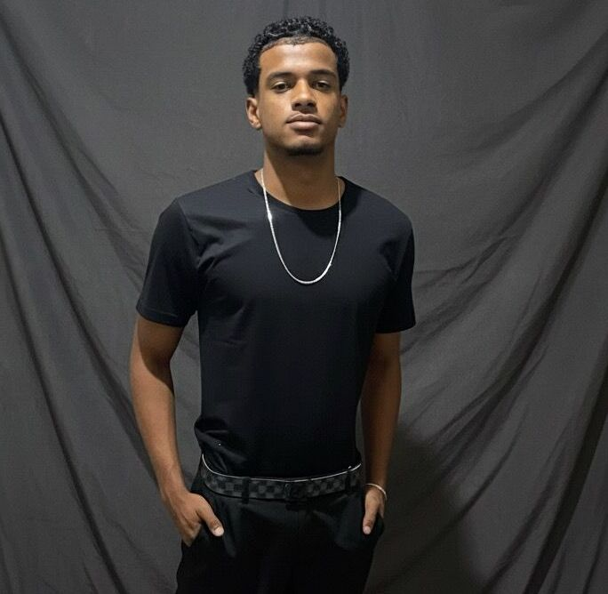
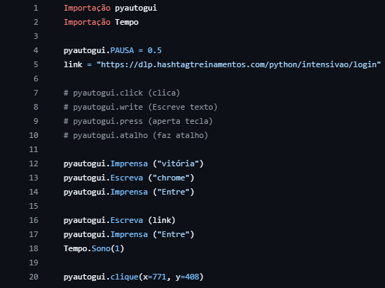

Olá, meu nome é
Estudante de Sistemas de Informação com foco em Redes e Infraestrutura. Apaixonado por tecnologia, soluções inteligentes e inovação.

Meu nome é Luis Felipe, tenho 18 anos e sou estudante de Sistemas de Informação. Tenho formação complementar em Técnico em Administração e Informática Profissional.
Desenvolvi forte interesse por tecnologia buscando entender não apenas como as ferramentas funcionam, mas como podem gerar impacto real nas pessoas e organizações.
Possuo experiência prática em redes e telecomunicações, atuando com suporte técnico, infraestrutura, gerenciamento de IP, NAT, LAN e WAN.
Meu objetivo é construir uma carreira sólida em TI, contribuindo com soluções eficientes, inovação e profissionalismo.
Analítico, disciplinado e orientado à solução de problemas.
Sistemas, Infraestrutura, Desenvolvimento Web e Análise de Dados.
Crescimento técnico contínuo e atuação em ambientes corporativos.
Sistema desenvolvido para automação de cadastros de usuários, cadastro de dados e organização de informações com foco em eficiência e usabilidade.

Loading.
Loading.
Atuo na área de Tecnologia da Informação com foco em infraestrutura, suporte técnico e desenvolvimento de soluções digitais.
Possuo experiência prática em redes LAN e WAN, gerenciamento de endereçamento IP, NAT e diagnóstico de falhas técnicas.
Também desenvolvo projetos web utilizando HTML, CSS e lógica de programação, criando soluções modernas, organizadas e responsivas.
Tenho forte interesse em análise de dados e sistemas, utilizando a informação como ferramenta estratégica para tomada de decisão.